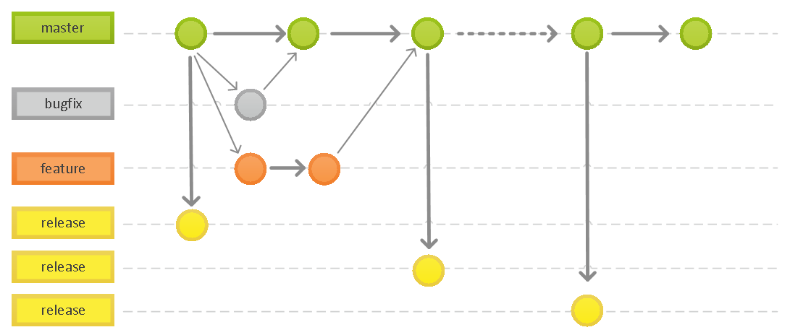
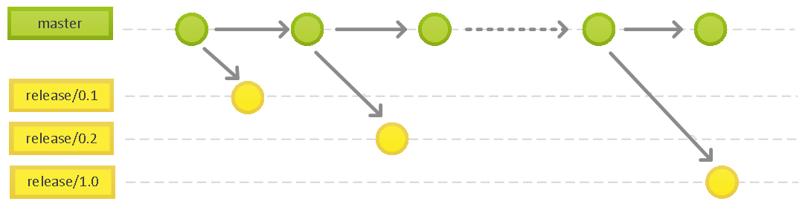
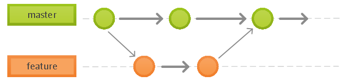
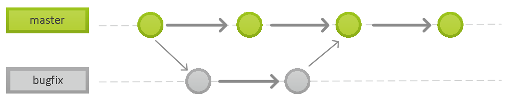
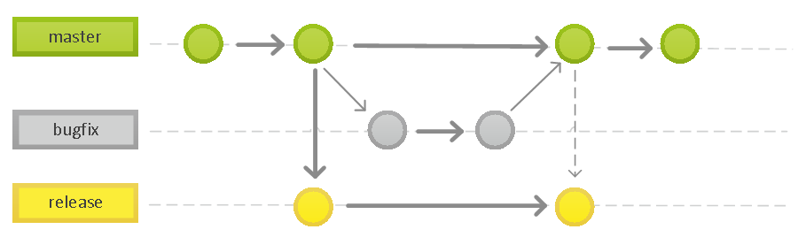
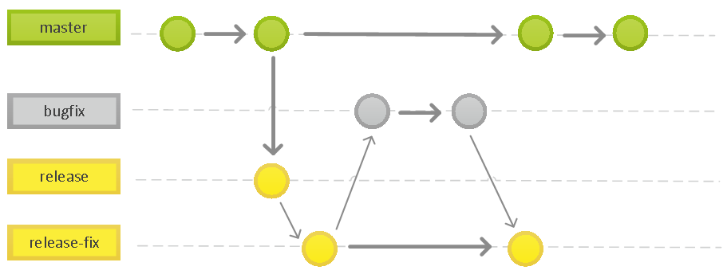
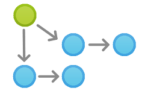
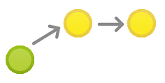

Phoenix 源码分支工作流
版次：2021年3月25日 第2.0版
版次：2016年7月6日 第1.0版
类型：技术文件
作者：Phoenix架构平台
上海维宏电子科技股份有限公司 版权所有
本工作流基于主干开发，分支发布模式以及我们组件管理的特点进行定义。

该工作流定义了一个围绕着项目发布的严格分支模型。提供了用于一个健壮的管理项目的框架。该工作流为不同的分支分配一个很明确的角色，并定义分支之间如何和什么时候进行交互。
1. 工作方式
工作流仍然以主分支作为交互中心。衍生出开发分支进行开发、发行分支进行测试发行、修复分支进行 bug 修复，一切都围绕着控制一个稳定的主分支并持续改进为本。
注意：与第1版有区别，这里的主分支 master 由开发者代码审核、单元测试保证质量。release 分支发布的组件由 CNC 测试组进行功能测试。
1.1 历史分支
该工作流通过多个 release 分支记录项目的历史。

1.2 开发分支
开发新功能与修复Bug时，开发人员开始的时候从 master 分支上拉出 feature 或 bugfix 分支。
在对应的分支上做所有的开发工作，一旦分支完成 feature 或 bugfix 分支不再和 master 交互。
feature 分支

bugfix 分支

常用分支约定：
- feature 分支的命名为
feature/*-workitem） - bugfix 分支的命名为
bugfix/*-workitem）*代表工作项编号workitem代表工作简短描述（英文）
1.3 发布分支

一旦 master 分支上有了做一次发布（或者说快到了既定的发布日）的足够功能，就从 master分支上拉出一个 release 分支。
新建的分支用于开始发布循环，所以从这个时间点开始之后新的功能不能再加到 release 分支上——
这个分支只应该做 bug修复、文档生成和其它面向发布任务。
使用一个用于发布准备的专门分支，使得一个团队可以在完善当前的发布版本的同时，另一个团队可以继续开发下个版本的功能。 这也打造定义良好的开发阶段（比如，可以很轻松地说，『这周我们要做准备发布版本4.0』，并且在仓库的目录结构中可以实际看到）。
常用的分支约定：
- 从
master拉出release分支。 - 分支的命名为
release-*，*代表版本号。 release分支打好标签。
1.4 发布 fix 版本
当某个已发布的版本发现问题，由于新版本不兼容，或者变更太大无法升级时，需要在原发布分支的基础上进行修正。

2. 示例
下面的示例演示本工作流如何用于管理单个发布循环。假设你已经创建了一个主分支项目。
2.1 准备主分支
第一步由仓库管理员初始化 master 分支，以后这个分支将会包含了项目的全部历史。
2.2 大家开发新功能

在集成源代码管理规则中大多数的开发都是所有人面对同一个开发分支进行开发和提交。

特殊情况下，如果开发过程相对复杂原则上允许对 master 分支继续进行分支开发， 分支出来的功能分支要尽量早点合并，并自行面对多分支情况下管理上的复杂度。
2.3 小红开始准备发布

这个时候小明正在实现他的功能，小红开始准备她的第一个项目正式发布。 像功能开发一样，她用一个新的分支来做发布准备。这一步也确定了发布的版本号： 这个分支是清理发布、执行所有测试、更新文档和其它为下个发布做准备操作的地方，像是一个专门用于改善发布的功能分支。
只要小红创建这个 release 分支并通过测试组验证，这个发布就是功能冻结的。任何不在 release 分支中的新功能都推到下个发布循环中。
2.4 小红完成发布
一旦准备好了对外发布，小红会通知发布团队已就绪，由发布团队集成软件与发布说明，完成发布。
2.5 最终用户发现 Bug
对外发布后，小红回去和小明一起做下个发布的新功能开发，直到有最终用户开了一个Ticket抱怨当前版本的一个 Bug。
为了处理Bug，小红（或小明）从 master 分支上拉出了一个 bugfix 分支，提交修改以解决问题，然后直接合并回 master 分支。
然后就可以安全地删除这个分支了。
版本信息
| 版本 | 日期 | 修改人 | 修改内容 |
|---|---|---|---|
| 2.0 | 2021/3/25 | Phoenix 架构平台 | 按照主干开发分支发布模式更新案例； master 作为主工作分支 |
| 1.0 | 2016/7/6 | Phoenix 架构平台 | 初版建立 |